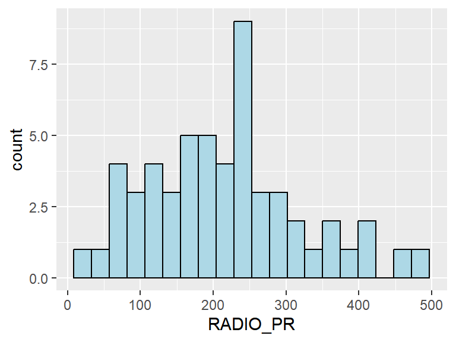
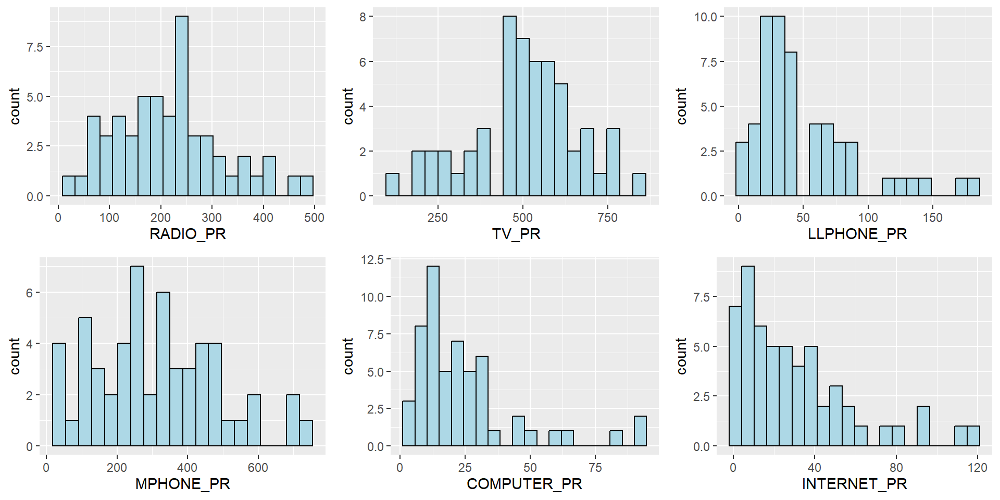

pacman::p_load(spdep, tmap, sf, ClustGeo,
ggpubr, cluster, factoextra, NbClust,
heatmaply, corrplot, psych, tidyverse, GGally)06: Geographical Segmentation with Spatially Constrained Clustering Techniques
1 Overview
In this exercise, we use methods like Hierarchical Cluster Analysis (HCA) and Spatially Constrained Cluster Analysis (SCCA) including (SKATER and ClusGeo) to group neighbouring spatial units into homogeneous regions (areas that are similar to each other in terms of variables, i.e. geographically referenced multivariate).
1.1 Learning Outcome
The tasks to be completed are to:
convert simple feature data.frame into R’s SpatialPolygonDataFrame object using
as_Spatial()of sf packageperform cluster analysis with
hclust()of Base Rperform spatially constrained cluster analysis using
skater()of Base Rvisualise the analysis using ggplot2 and tmap package.
2 Getting Started
2.1 The Analytical Question
In real world application likes geobusiness and geospatail related policy making, regions are defined by statistical similarity in the multivariate data. In the case study of Shan State Myanmar, we find and outline the clusters of areas that share similar characteristics, through multiple Information and Communication technology (ICT) measures, namely: Radio, Television, Land line phone, Mobile phone, Computer, and Internet at home.
3 The Data
| Dataset | Description | Format |
|---|---|---|
| myanmar_township_boundaries | GIS Myanmar Township Boundary Data represented as polygon features | ESRI shapefile |
| Shan-ICT.csv | 2014 Myanmar Population and Housing Census at the township level | CSV |
The data can be downloaded from Myanmar Information Management Unit (MIMU).
3.1 Installing and Loading R Packages
There are 14 packages used in this exercise.
Spatial data (sf, spdep, tmap)
Cluster analysis (ClustGeo, cluster, NbClust, factoextra)
Multivariate exploration (corrplot, heatmaply, psych, GGally)
Visualisation / general workflow (tidyverse, ggpubr)
| Package | Description |
|---|---|
| sf | Handles importing, managing, and processing vector-based geospatial data |
| rgdal | Provides bindings to the GDAL/OGR library for reading/writing spatial data formats. |
| spdep | Tools for spatial dependence: building neighbour lists, spatial weights, and spatial autocorrelation analysis. |
| tidyverse | A collection of R packages for data wrangling and visualization, including readr, dplyr, and ggplot2. |
| tmap | Creates cartographic quality static and interactive thematic (choropleth) maps. |
| corrplot | Provides graphical displays of correlation matrices for multivariate data exploration. |
| ggpubr | Simplifies publication-ready plots based on ggplot2 with statistical annotations. |
| heatmaply | Generates interactive heatmaps for exploring multivariate data relationships. |
| cluster | Functions for cluster analysis, including hierarchical, partitioning, and silhouette methods. |
| ClustGeo | Performs spatially constrained clustering by balancing attribute similarity with geographical contiguity. |
| NbClust | Determines the optimal number of clusters using multiple indices and methods. |
| facoextra | Visualisation tools for clustering and multivariate analyses (e.g., PCA, CA, HCPC). |
| GGally | Extension of ggplot2 with functions for pair plots, network plots, and correlation plots. |
| psych | rocedures for psychometric and multivariate analysis, including factor analysis. |
The code chunk below loads the packages into R environment.
4 Data Import and Preparation
4.1 Importing Geospatial Data into R Environment
The code chunk below usesst_read() from sf package to import Mayanmar Township Boundary (myanmar_township_boundaries) in shapefile format into R as a simple feature data.frame.
Reading layer `myanmar_township_boundaries' from data source
`C:\lsrgc\ISSS626-yiqiong-pan\Hands-on_Ex\Hands-on_Ex06\data\geospatial'
using driver `ESRI Shapefile'
Simple feature collection with 330 features and 14 fields
Geometry type: MULTIPOLYGON
Dimension: XY
Bounding box: xmin: 92.17275 ymin: 9.671252 xmax: 101.1699 ymax: 28.54554
Geodetic CRS: WGS 84shan_sfSimple feature collection with 55 features and 6 fields
Geometry type: MULTIPOLYGON
Dimension: XY
Bounding box: xmin: 96.15107 ymin: 19.29932 xmax: 101.1699 ymax: 24.15907
Geodetic CRS: WGS 84
First 10 features:
ST ST_PCODE DT DT_PCODE TS TS_PCODE
1 Shan (North) MMR015 Mongmit MMR015D008 Mongmit MMR015017
2 Shan (South) MMR014 Taunggyi MMR014D001 Pindaya MMR014006
3 Shan (South) MMR014 Taunggyi MMR014D001 Ywangan MMR014007
4 Shan (South) MMR014 Taunggyi MMR014D001 Pinlaung MMR014009
5 Shan (North) MMR015 Mongmit MMR015D008 Mabein MMR015018
6 Shan (South) MMR014 Taunggyi MMR014D001 Kalaw MMR014005
7 Shan (South) MMR014 Taunggyi MMR014D001 Pekon MMR014010
8 Shan (South) MMR014 Taunggyi MMR014D001 Lawksawk MMR014008
9 Shan (North) MMR015 Kyaukme MMR015D003 Nawnghkio MMR015013
10 Shan (North) MMR015 Kyaukme MMR015D003 Kyaukme MMR015012
geometry
1 MULTIPOLYGON (((96.96001 23...
2 MULTIPOLYGON (((96.7731 21....
3 MULTIPOLYGON (((96.78483 21...
4 MULTIPOLYGON (((96.49518 20...
5 MULTIPOLYGON (((96.66306 24...
6 MULTIPOLYGON (((96.49518 20...
7 MULTIPOLYGON (((97.14738 19...
8 MULTIPOLYGON (((96.94981 22...
9 MULTIPOLYGON (((96.75648 22...
10 MULTIPOLYGON (((96.95498 22...The sf object follows Hardy Wickham’s tidyverse principles, so we can handle it like a tidy tibble (rows = observations, cols = variables), with an extra geometry column.
glimpse(shan_sf)Rows: 55
Columns: 7
$ ST <chr> "Shan (North)", "Shan (South)", "Shan (South)", "Shan (South)…
$ ST_PCODE <chr> "MMR015", "MMR014", "MMR014", "MMR014", "MMR015", "MMR014", "…
$ DT <chr> "Mongmit", "Taunggyi", "Taunggyi", "Taunggyi", "Mongmit", "Ta…
$ DT_PCODE <chr> "MMR015D008", "MMR014D001", "MMR014D001", "MMR014D001", "MMR0…
$ TS <chr> "Mongmit", "Pindaya", "Ywangan", "Pinlaung", "Mabein", "Kalaw…
$ TS_PCODE <chr> "MMR015017", "MMR014006", "MMR014007", "MMR014009", "MMR01501…
$ geometry <MULTIPOLYGON [°]> MULTIPOLYGON (((96.96001 23..., MULTIPOLYGON (((…4.2 Importing Aspatial Data into R Environment
The chunk below imports ICT variables via read_csv() function of readr package as a tibble data.frame. The data are from The 2014 Myanmar Population and Housing Census Myanmar.
ict <- read_csv ("data/aspatial/Shan-ICT.csv")The code chunk below summrises the statistics from attribute table. There are a total of eleven fields and 55 observation in the tibble data.frame.
summary(ict) District Pcode District Name Township Pcode Township Name
Length:55 Length:55 Length:55 Length:55
Class :character Class :character Class :character Class :character
Mode :character Mode :character Mode :character Mode :character
Total households Radio Television Land line phone
Min. : 3318 Min. : 115 Min. : 728 Min. : 20.0
1st Qu.: 8711 1st Qu.: 1260 1st Qu.: 3744 1st Qu.: 266.5
Median :13685 Median : 2497 Median : 6117 Median : 695.0
Mean :18369 Mean : 4487 Mean :10183 Mean : 929.9
3rd Qu.:23471 3rd Qu.: 6192 3rd Qu.:13906 3rd Qu.:1082.5
Max. :82604 Max. :30176 Max. :62388 Max. :6736.0
Mobile phone Computer Internet at home
Min. : 150 Min. : 20.0 Min. : 8.0
1st Qu.: 2037 1st Qu.: 121.0 1st Qu.: 88.0
Median : 3559 Median : 244.0 Median : 316.0
Mean : 6470 Mean : 575.5 Mean : 760.2
3rd Qu.: 7177 3rd Qu.: 507.0 3rd Qu.: 630.5
Max. :48461 Max. :6705.0 Max. :9746.0 4.3 Derive Bew Variables Using dplyr Package
The code chunk below derives the penetration rate of each ICT variable based on total household number in township. We should always transform absolute values to relative measures before doing spatial analysis or clustering, otherwise the results will be dominated by township size.
ict_derived <- ict %>%
mutate(`RADIO_PR` = `Radio`/`Total households`*1000) %>%
mutate(`TV_PR` = `Television`/`Total households`*1000) %>%
mutate(`LLPHONE_PR` = `Land line phone`/`Total households`*1000) %>%
mutate(`MPHONE_PR` = `Mobile phone`/`Total households`*1000) %>%
mutate(`COMPUTER_PR` = `Computer`/`Total households`*1000) %>%
mutate(`INTERNET_PR` = `Internet at home`/`Total households`*1000) %>%
rename(`DT_PCODE` =`District Pcode`,`DT`=`District Name`,
`TS_PCODE`=`Township Pcode`, `TS`=`Township Name`,
`TT_HOUSEHOLDS`=`Total households`,
`RADIO`=`Radio`, `TV`=`Television`,
`LLPHONE`=`Land line phone`, `MPHONE`=`Mobile phone`,
`COMPUTER`=`Computer`, `INTERNET`=`Internet at home`) Let’s have a quick check on the new talbe.
summary(ict_derived) DT_PCODE DT TS_PCODE TS
Length:55 Length:55 Length:55 Length:55
Class :character Class :character Class :character Class :character
Mode :character Mode :character Mode :character Mode :character
TT_HOUSEHOLDS RADIO TV LLPHONE
Min. : 3318 Min. : 115 Min. : 728 Min. : 20.0
1st Qu.: 8711 1st Qu.: 1260 1st Qu.: 3744 1st Qu.: 266.5
Median :13685 Median : 2497 Median : 6117 Median : 695.0
Mean :18369 Mean : 4487 Mean :10183 Mean : 929.9
3rd Qu.:23471 3rd Qu.: 6192 3rd Qu.:13906 3rd Qu.:1082.5
Max. :82604 Max. :30176 Max. :62388 Max. :6736.0
MPHONE COMPUTER INTERNET RADIO_PR
Min. : 150 Min. : 20.0 Min. : 8.0 Min. : 21.05
1st Qu.: 2037 1st Qu.: 121.0 1st Qu.: 88.0 1st Qu.:138.95
Median : 3559 Median : 244.0 Median : 316.0 Median :210.95
Mean : 6470 Mean : 575.5 Mean : 760.2 Mean :215.68
3rd Qu.: 7177 3rd Qu.: 507.0 3rd Qu.: 630.5 3rd Qu.:268.07
Max. :48461 Max. :6705.0 Max. :9746.0 Max. :484.52
TV_PR LLPHONE_PR MPHONE_PR COMPUTER_PR
Min. :116.0 Min. : 2.78 Min. : 36.42 Min. : 3.278
1st Qu.:450.2 1st Qu.: 22.84 1st Qu.:190.14 1st Qu.:11.832
Median :517.2 Median : 37.59 Median :305.27 Median :18.970
Mean :509.5 Mean : 51.09 Mean :314.05 Mean :24.393
3rd Qu.:606.4 3rd Qu.: 69.72 3rd Qu.:428.43 3rd Qu.:29.897
Max. :842.5 Max. :181.49 Max. :735.43 Max. :92.402
INTERNET_PR
Min. : 1.041
1st Qu.: 8.617
Median : 22.829
Mean : 30.644
3rd Qu.: 41.281
Max. :117.985 New columns, RADIO_PR, TV_PR, LLPHONE_PR, MPHONE_PR, COMPUTER_PR, and INTERNET_PR,are created as planned.
5 Exploratory Data Analysis (EDA)
5.1 EDA Using Statistical Graphics
To examine the variables such as the number of households with radio, we can use graphical methods that highlight different aspects of the data distribution:
Histogram
Shows the overall shape of the distribution.
Helps identify whether the data is left-skewed, right-skewed, or approximately normal.
Useful for understanding the frequency of values and detecting clustering or gaps in the data.
ggplot(data=ict_derived,
aes(x=`RADIO`)) +
geom_histogram(bins=20,
color="black",
fill="light blue")
Boxplot:
Summarises the distribution using the five-number summary (minimum, Q1, median, Q3, maximum).
Makes it easy to detect outliers and understand the spread and central tendency of the data.
Allows quick comparison across multiple variables or groups (e.g., by township).
ggplot(data=ict_derived,
aes(x= RADIO )) +
geom_boxplot(color="black",
fill="light blue")
Let’s also visualise the distribution of the newly derived variables (i.e. Radio penetration rate).
ggplot(data = ict_derived,
aes(x = RADIO_PR)) +
geom_histogram(bins = 20,
color = "black",
fill = "light blue")
ggplot(data = ict_derived,
aes(x = RADIO_PR)) +
geom_boxplot(color = "black", fill = "light blue")
Note
- What can you observed from the distributions reveal in the histogram and boxplot?
The penetration rate data are more normally distributed and show fewer outliers than the raw ownership counts, since the effect of township size has been normalised.
In the figure below, multiple histograms are plotted to reveal the distribution of the selected variables in the ict_derived data.frame.
In tmap, tmap_arrange() (or tmarange) is used to arrange multiple map plots side by side or in a grid layout.
In ggplot2, the equivalent is ggarrange() from the ggpubr package.
View code
radio <- ggplot(data= ict_derived,
aes(x = RADIO_PR)) +
geom_histogram(bins = 20, color = "black", fill = "light blue")
tv <- ggplot(data = ict_derived, aes(x= TV_PR)) +
geom_histogram(bins = 20, color = "black", fill = "light blue")
llphone <- ggplot(data = ict_derived, aes(x = LLPHONE_PR)) +
geom_histogram(bins = 20, color = "black",fill = "light blue")
mphone <- ggplot(data = ict_derived, aes(x = MPHONE_PR)) +
geom_histogram(bins = 20, color = "black", fill = "light blue")
computer <- ggplot(data = ict_derived, aes(x = COMPUTER_PR)) +
geom_histogram(bins = 20, color = "black", fill ="light blue")
internet <- ggplot(data = ict_derived, aes(x = INTERNET_PR)) +
geom_histogram(bins = 20, color = "black", fill = "light blue")
ggarrange(radio, tv, llphone, mphone, computer, internet,
ncol = 3,
nrow = 2)
6 Reference
Kam, T. S. 8 Spatial Weights and Applications. R for Geospatial Data Science and Analytics. https://r4gdsa.netlify.app/chap12